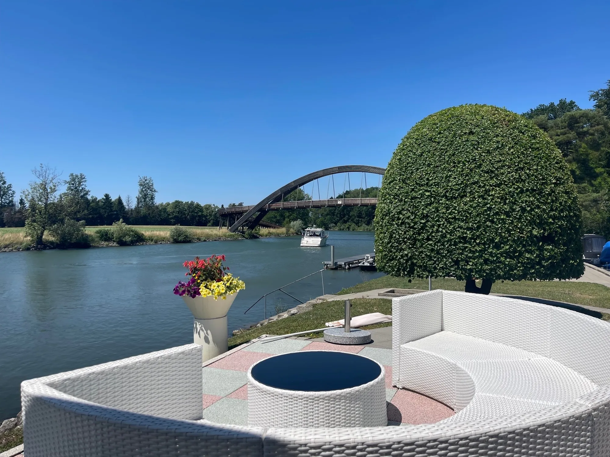
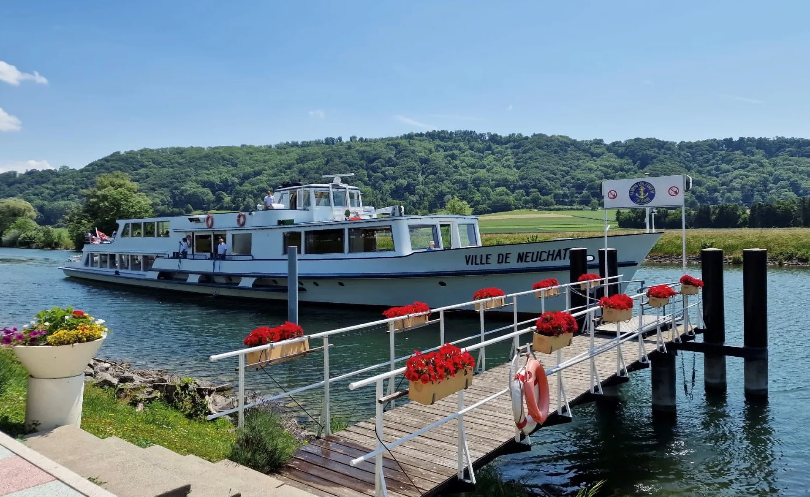
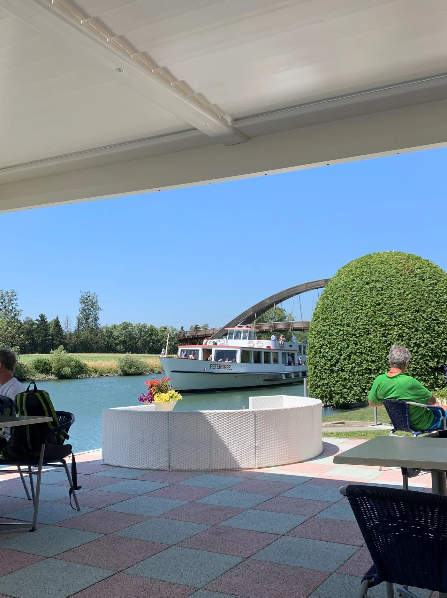
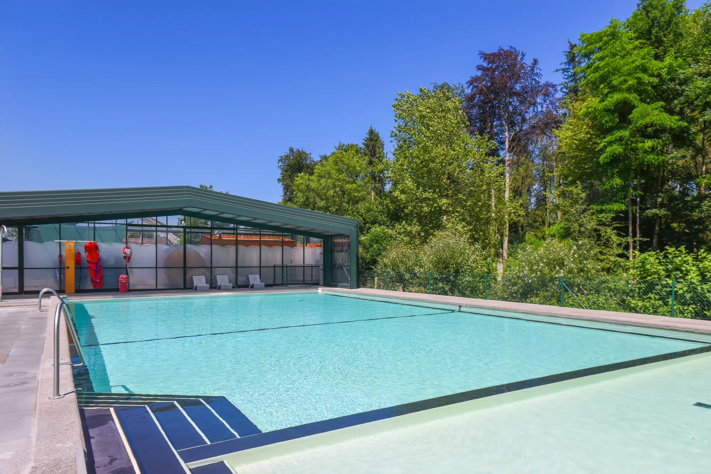
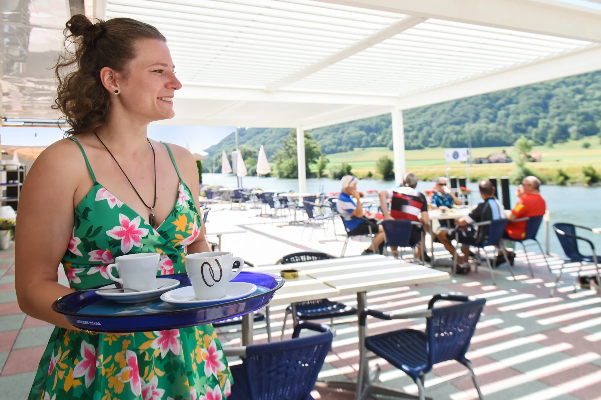
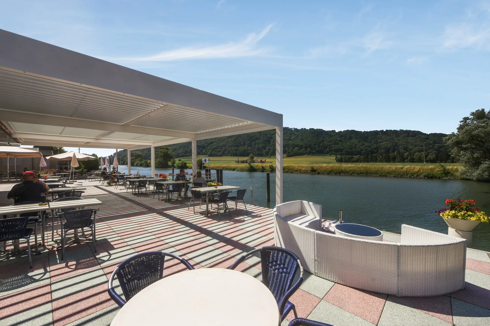
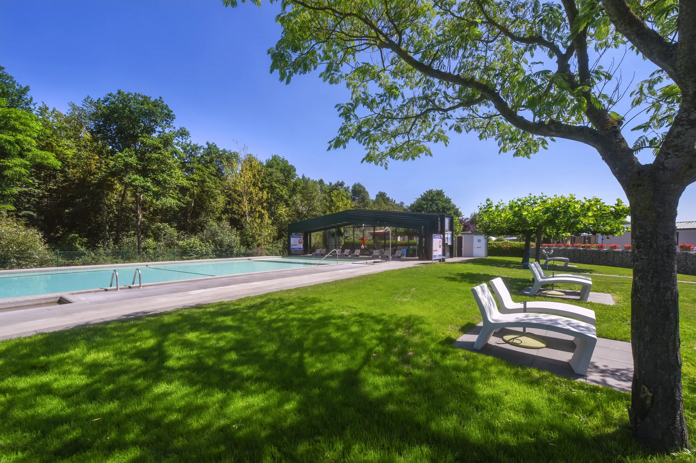
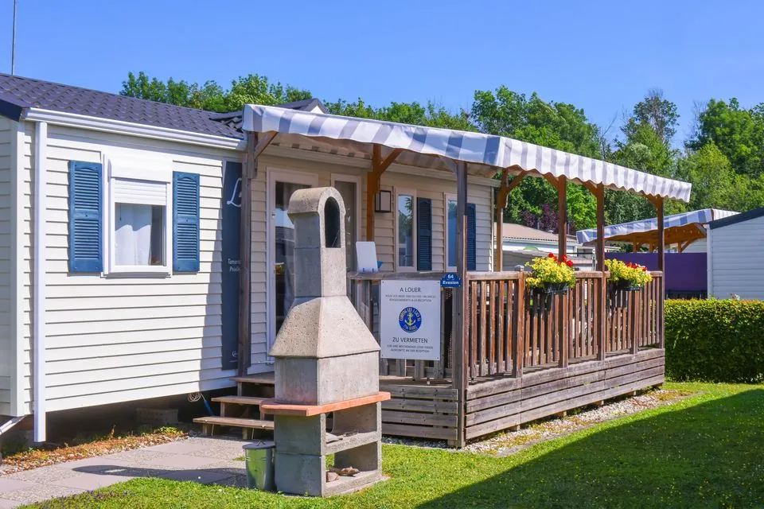
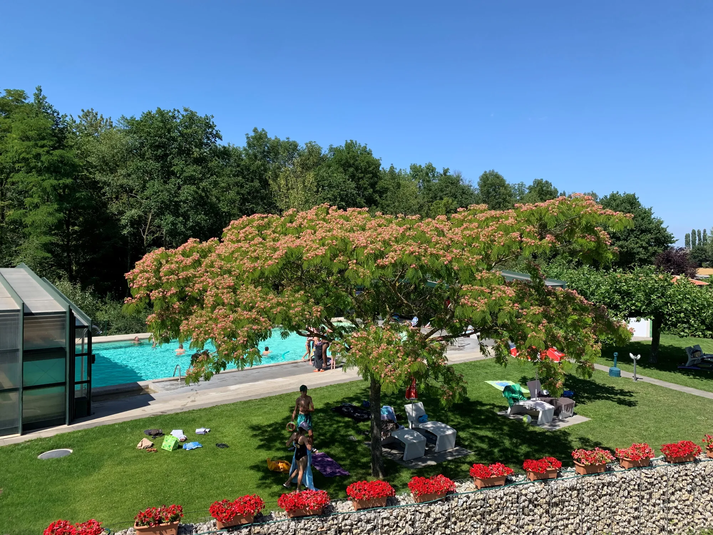

Camping les 3 Lacs · Sugiez, Vully fribourgeois
Entre terre et eau.
Votre havre de paix au bord du canal de la Broye, entre les lacs de Morat, de Neuchâtel et de Bienne.
Camping touristique ouvert du 24 avril au 30 septembre

- 10 hade verdure au cœur du Seeland
- 3 lacsMorat, Neuchâtel et Bienne autour de vous
- 20 × 10 mde piscine, gratuite pour tous les campeurs
- N° 5sur l'itinéraire de la Suisse à vélo, Lausanne – Romanshorn
Le lieu
Un microclimat au bord de la Broye
Dans la région du Vully fribourgeois, au cœur du Seeland suisse, le camping s'étend en bordure du canal de la Broye, entre les lacs de Morat et de Neuchâtel. Balades à vélo par le pont Rotary, excursions en bateau, vélo-golf de 18 trous autour du lac de Morat, avec un trou sur la place de jeux du camping.
- En bateau
- À vélo
- En rollers
- À pied
- En voiture



Le bien-être au camping
Une piscine, même quand il pleut
Un abri télescopique couvre la piscine en cas de mauvais temps et la chauffe naturellement au soleil. Lors des grandes chaleurs, il s'ouvre entièrement.
- Ouverte
- De mai à fin septembre
- Bassins
- Grand bassin progressif jusqu'à 1,70 m, bassin séparé de 45 cm pour les petits
- Horaires
- Lundi 12h – 20h, mardi à dimanche 9h – 20h
- Accès
- Gratuit pour les campeurs résidentiels, de location et de passage


Snackerie « Chez Babou »
Trois terrasses au bord de l'eau
Que vous arriviez par bateau, à vélo ou à pied, le self-service Chez Babou vous accueille sur ses trois terrasses au bord du canal, dont une sous un abri bioclimatique. Son jardin d'hiver, entièrement rénové, vous reçoit dans un décor verdoyant.
Ouvert d'avril à octobre, et aussi en novembre et décembre.
Séjourner
Une nuit, une semaine ou toute l'année
-

De passageEmplacements de passage
Pour une halte dans la région ou un week-end en famille, avec votre tente, caravane ou camping-car.
Voir les emplacements -

Sans rien monterLocations de passage
Profitez du camping sans monter votre tente ni installer votre caravane.
Voir les locations -

RésidentielEmplacements à l'année
Le camping résidentiel est ouvert toute l'année, équipé des commodités modernes.
En savoir plus
Réception
026 673 19 93Lundi à vendredi, 8h30 – 11h30
Chez Babou
026 673 12 12En ce moment : samedi et dimanche, 11h – 16h
Écrire
Adresse
Route du Canal 2
1786 Sugiez